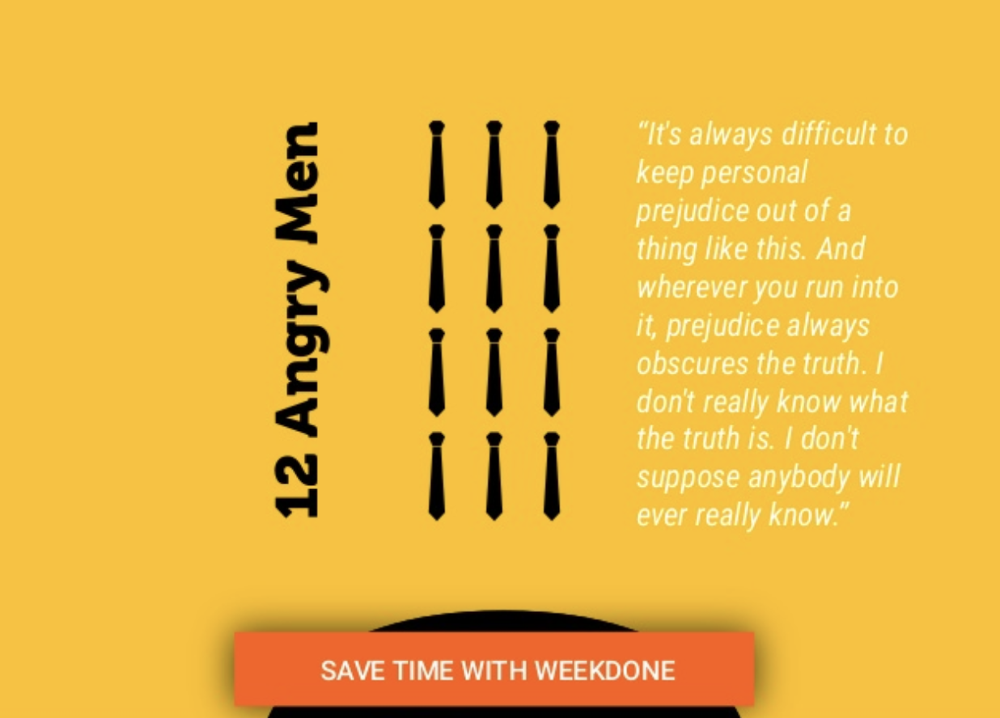

chapter26.1--handout
Background Information
General Electric Company
通用电气公司，即美国通用电气公司（General Electric Company，简称GE，创立于1892年，又称奇异公司，NYSE：GE），GE是世界上最大的多元化服务性公司，从飞机发动机、发电设备到金融服务，从医疗造影、电视节目的塑料，GE公司致力于通过多项技术和服务创造更美好的生活。GE在全世界100多个国家开展业务，在全球拥有员工近300,000人。
2016年10月，通用电气公司排2016年全球100大最有价值品牌第十名。美国通用电气公司2017年6月1日宣布，在天津空港经济区启用其首个美国以外、服务于多个业务部门的智能制造技术中心。在2017年6月7日发布的2017年《财富》美国500强排行榜中，排名第十三。2017年6月，《2017年BrandZ最具价值全球品牌100强》公布，通用电气公司排名第19位。
通用电气公司的总部位于美国康涅狄格州费尔菲尔德市(fairfield, CT)。这家公司的电工产品技术比较成熟，产品品种繁多。它除了生产消费电器、工业电器设备外，还是一个巨大的军火承包商，制造宇宙航空仪表、喷气飞机引航导航系统、多弹头弹道导弹系统、雷达和宇宙飞行系统等。闻名于世的可载原子弹和氢弹头的阿特拉斯火箭、雷神号火箭就是这家公司生产的。
GE的品牌口号是“梦想启动未来”（imagination at work）。
Charles Steinmetz
Charles Proteus Steinmetz (April 9, 1865 – October 26, 1923)德裔美籍数学家（mathematician），电气工程师（electrical engineer），联合大学教授（professor at Union College），他促进了交流电的发展，使美国电力工业的扩张成为可能，为工程师制定了数学理论。他在了解磁滞现象（hysteresis）方面取得了突破性的发现，使工程师能够设计出更好的电磁设备设备，尤其是工业用电动机。
Fred Clark
Frederick Leonard Clark (March 19, 1914 – December 5, 1968)
美国电影电视演员。
💧二十年的电影从业生涯中，Fred创造了7部电影，无数电视剧形象。 作为一个配角演员，他粗哑的声音、令人望而生畏的体格、光头的造型、以及总是怒气冲冲的脸上挂着的小胡子，他经常扮演黑帮老大、地主等形象。
WWII（二战）期间，Clark加入了美国海军（the United States Navy）做了一个飞行员。蛤？海军飞行员吗？是的真有这个职位，原因就是美国有很多航空母舰（aircraft carrier英文名字多么直白），每艘航母上都有数十甚至上百架飞机，这就是海军航空兵，这些飞行员就是海军飞行员。
之后，他转入了美国陆军，和第三陆军（the Third Army）奋战在欧洲战场，直到二战结束。
vice president（副总裁、副总统）
💧Vice President，缩写VP，表示副总监、副总裁、副总统之类的意思，比如财务VP，是直接向总裁汇报的副手，权利非常大。一般的话都是因为总裁CEO无暇顾及琐碎或者需要有更为宏观的去考虑公司的事情的话就会考虑配一个或数个VP。
一个公司的体制里面会有各种职级、各种title的人，比较常见的几种：
💧总经理 —GM(General Manager)
💧首席执行官 —CEO
（Chief Executive Officer）
首席执行官是在一个企业中负责日常事务的最高行政官员。
💧首席运营官—COO
(Chief Operations Officer)
类似常务总经理
💧首席财务官 —CFO
(Chief Financial Officer)
在一个大型公司运作中，公司理财与金融市场交互、项目估价、风险管理、产品研发、战略规划、企业核心竞争力的识别与建立以及洞悉信息技术及电子商务对企业的冲击等自然都是CFO职责范围内的事。
💧首席技术官 —CTO
(Chief technology officer)
类似总工程师
💧人力资源总监 —HRD
(Human Resource Director)
💧运营总监 —OD
(Operations Director)
💧市场总监 —MD
(Marketing Director)
Vocabulary
magnitude
💧property, ratio, importance
n. 巨大; 重要性
💧earthquake magnitude
地震震级
💧The magnitude of the flood was impossible to comprehend.
这场水灾的危害性是无法了解的。
maneuver
💧a plan for attaining a particular goal;
💧a military training exercise.
n. 策略；演习；调遣；机动
💧This maneuver of his is a diabolical conspiracy.
他这一手是一个居心叵测的大阴谋。
💧But she has run out of maneuvering room to some degree.
但是从某种程度上说她已经没有回旋余地了。
distasteful
adj. 使人不愉快的；讨厌的
💧Smoking is distasteful to my family.
我一家都不喜欢抽烟。
💧The medicine is distasteful but good for you.
这药虽难吃,但对你身体有好处。
reprimand
💧criticism, unfavorable judgment
n. 训斥, 惩戒
💧He was reprimanded for insufficient control.
他因管理不善受到了责备。
💧His boss gave him a reprimand for being late.
他的老板因他迟到而训了他一顿。
byword
💧aying, expression, locution
n. 谚语，俗语；格言；笑柄
💧his name became a byword for luxury.
他的名字成了奢侈的代名词。
💧The eccentric poet was a byword in literary circles.
这个古怪的诗人在文学圈内臭名昭著。
Crush Your Problems
- We ride roughshod over the feelings of others, getting our own way, finding fault, issuing threats, criticizing a child or an employee in front of others, without even considering the hurt to the other person's pride.
💧ride roughshod over sb/sth.
对某人/某事物为所欲为
恣意妄为的意思，想要去表达不在乎别人的感受、自私等意思的时候，可以替换哦～
比如：
He pays no attention to other people's feelings so that everybody just stays away from him.
可以改为：
He rides roughshod over the feelings of other people and thus nobody ever wants to hang out with him any longer.
整个句子的理解：我们不在乎别人的感受，恣意妄为，挑别人刺儿，当着别人面批评小孩，完全不考虑伤害别人的情感。
- Not wanting to be embarrassed in front of his peers, the supervisor was evasive in his responses.
💧这里稍微讲一个语法点：non-finite verbs（非谓语动词）做伴随状语，注意一个点，就是非谓语动词（to do/ doing/ done）的主语，要和句子的主语保持一致，因为这个结构其实就是省略出来的，比如这个句子还原回来的话，就是：
The supervisor did not want to be embarrassed in front of his peers;
the supervisor was evasive in his responses.
💧因为两个the supervisor的重复，所以省略掉其中一个（一般是保留需要强调的那一个），这样呈现出来的句子会更加简洁。
PS：要注意，只有主语一致的情况下可以省略哦～否则会构成Dangling Participle（悬垂结构）的语病。
- Instead, he thanked me for my work and remarked that it was not unusual for a person to make an error on a new project and that he had confidence that the repeat survey would be accurate and meaningful to the company.
💧双重否定有的时候使用好了会有很好的效果，这里的it was not unusual，就是这样的表达，比如常见的这种意思，除了说usual，common，wide，还可以用他们的反义词做双重否定，比如uncommon，narrow等等。
Content Analysis
今天的故事中卡叔举了三个例子，说明要去询问，而不是命令。
今天的内容中，卡叔给我们讲到了如何顾全别人面子的道理。下面我们来看一下具体的例子：
💧General Electric Company 打算撤去Steinmetz的会计部长（the head of the calculating department）职位，因为他在做calculating的事情方面基本并没有什么用，但由于Steinmetz是电学方面不可多得的人才，而且又很敏感，公司不敢得罪他。所以，公司特别给他一个新头衔，请他担任顾问工程师（Consulting Engineer of the General Electric Company），而另派他人担任他原本的职位，结果自然双方都很满意。
（They had gently maneuvered their most temperamental star, and they had done it without a storm - by letting him save face.）

💧顾全到一个人的面子，那是多么重要！(Letting one save face! How important, how vitally important that is!)可是我们之间，很少有人想到过。我们蹂躏别人的感情，不留一丝的余地，找别人的错处，或者加以恐吓！当着别人面前，批评他的孩子，或是他所雇用的佣工，毫不顾虑到别人的自尊！
💧其实，我们只需要花几分钟的时间想一想，再说一、两句体恤的话，谅解到对方的观点，就可以解除很多刺痛。
(Whereas a few minutes' thought, a considerate word or two, a genuine understanding of the other person's attitude, would go so far toward alleviating the sting!)
💧炒掉员工不是一件好差事，被炒掉的话就更不是了。（"Firing employees is not much fun. Getting fired is even less fun."）然鹅Marshall的业务都是有季节性的（mostly seasonal），所以每次集中缴完个人所得税（income tax），都需要辞退一批人。
💧但是不同的人辞退的方式也不同，很多人会直接说，坐下我们聊聊，我们不需要你了，反正你理解你是因为旺季到来了才被招来的...这种方式最终的结果就是让人特别失望，进而对公司充满了怨气吧（The effect on these people is one of disappointment and a feeling of being 'let down.' ）
💧比起前面那种简单粗暴的方式，另一种方式会好很多：先给对方点赞，夸赞对方做的很好/ 资源有限的情况下完成的不错，感激员工对公司的贡献，并且说明，以后有机会的话时刻欢迎他回来。这种方式的效果毋庸置疑：他们会心怀感动，知道公司对他们的认可，如果我们需要的时候，他们一定会满心欢喜的回来。（ They know if we had work for them, we'd keep them on. And when we need them again, they come to us with a keen personal affection.）
💧Fred Clark讲述了他的公司里的一件事情，一次产品会议上，公司的某个VP（vice president）针对一个supervisor提各种尖锐的问题，diss他做事情的结果没达到预期，supervisor为了在自己下属面前挽回颜面所以闪烁其词，然后VP居然暴走...说supervisor是个骗砸...（This caused the vice president to lose his temper, berate the supervisor and accuse him of lying.）最终的结果，这名supervisor在这个公司变成了个废人，不久之后就跳槽到竞品的公司，据说后面还做得有声有色。
💧Anna Mazzone的故事就比较暖心，本来搞砸了事情吓得要死，在等待老板发飙的时候（expecting my boss to blow up），发现老板居然表扬了自己，表示理解人都会犯错，尤其是遇到一个新的项目的时候，感激她对公司的贡献。（instead, he thanked me for my work and remarked that it was not unusual for a person to make an error on a new project and that he had confidence that the repeat survey would be accurate and meaningful to the company. ）最终的结果自然要好过上一个故事，Anna决心再也不让老板失望了。（I would never let that boss of mine down again.）
💧即使我们知道别人错了，也不要去故意让人家丢脸，进而伤害对方的自尊。（Even if we are right and the other person is definitely wrong, we only destroy ego by causing someone to lose face. ）
💧就像《小王子》的作者Antoine de Saint-Exupéry写到的那样：
我没有权利去让一个人看轻自己，我怎么想他并不重要，重要的是他怎么想自己，伤害一个人的自尊，就是犯罪。
"I have no right to say or do anything that diminishes a man in his own eyes. What matters is not what I think of him, but what he thinks of himself. Hurting a man in his dignity is a crime."
💧所以今天的故事，卡叔告诉我们，想做一个好的leader，不管是公司领导还是团队负责人还是班长小组长，你都需要：Let the other person save face.
Today's Bonus
这一部分开始卡叔给我们讲到了各种领导力的主题，不仅仅是在职场当中，在任何地方具备一定的领导力都是很重要的。那么今天的彩蛋，就给大家推荐几部和leadership有关的电影吧～周末开心吼～
💧“用户反复无常，Friendster（全球最大的社交网站之一，后来失去优势）已经证明如此。甚至一些人的离开会激荡整个用户群。用户是相互关联的，这事关整体。大学生们在线，是因为他们的朋友也在线，如果一片多米诺骨牌离开了，其他的骨牌也会依次离开，你不明白吗？”
——《社交网络》
（Social Network）

💧“在这样的事情上，总是很难避免个人偏见。无论你在哪里遇到它，偏见总会掩盖真相。我真的不知道真相是什么。我不认为有人会真的知道。”
——《十二怒汉》
（12 Angry Men）
💧“小心你的语言，因为他会变成你的思想；小心你的思想，因为他会变成你的行动；小心你的行动，因为他会变成你的习惯；小心你的性格，因为他会变成你的命运！我们会成为我们所想成为的人。”
——《铁娘子》
（The Iron Lady）
💧“在人们想要的以及他们需要的之外，你可以自己选择。”
——《穿普拉达的魔鬼》
（The Devil Wears Prada）
💧“我在勘测土地的时候（林肯做过勘测员）学会了使用指北针。它会从你所站在的位置为你指出真实正确的北方。但是它不能给出任何建议，关于在向北方前进的道路上可能会遇到的各种沼泽、沙漠和深坑。”
——《林肯》
（Lincoln）
💧“失败不是一个选项。”
——《阿波罗13号》
（Apollo 13）
💧“没有特殊原因，我决定小跑着去。所以我跑到了路的尽头，到达那里时，我想我可能会跑到镇的尽头。当我到了那里，我想我可以横跨绿茵县。我想我可能只能到达这么远。又或许我穿过的是巨大的阿拉巴马州，这就是我所做的。”
——《阿甘正传》
（Forrest Gump）
💧“救人一命等于救全人类。”
——《辛德勒名单》
（11. Schindler's List）
💧“记住瑞德，希望是件好东西，也许是最好的东西，好东西从来不会消逝。”
——《肖申克的救赎》
（The Shawshank Redemption）
💧“你不必去害怕你五岁的时候怕过的东西。”
——《国王的演讲》
（The King's speech）
smart word
今天感触最深的是卡叔引用了《小王子》作者Antoine de Saint-Exupéry的话：
"I have no right to say or do anything that diminishes a man in his own eyes. What matters is not what I think of him, but what he thinks of himself. Hurting a man in his dignity is a crime."